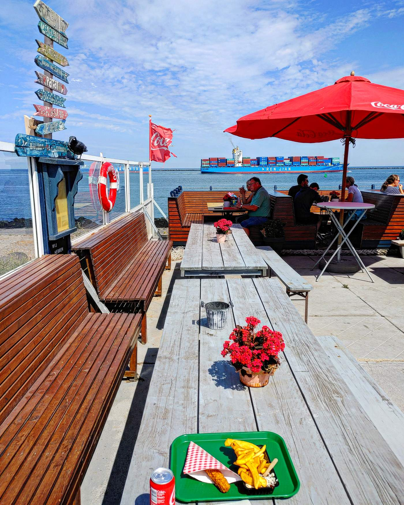
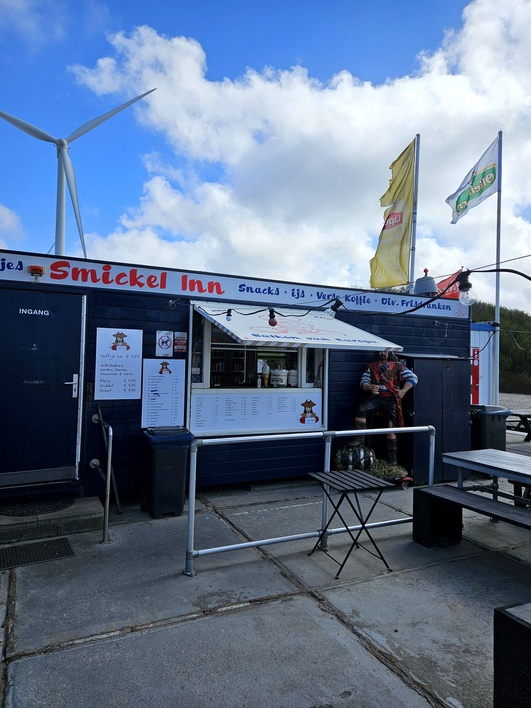
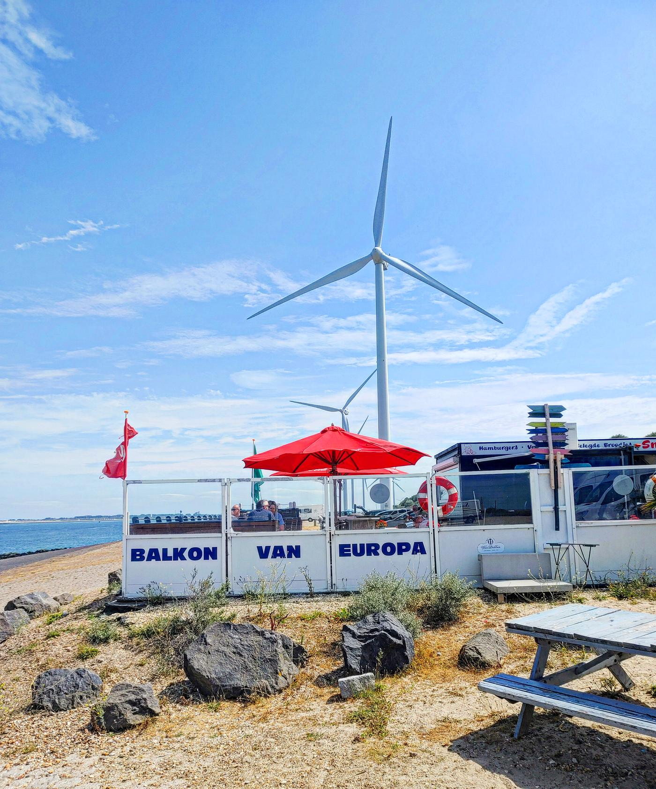

Het Balkon van Europa: waar Rotterdam ophoudt en de Noordzee begint

Niet elke plek voor Rotterdam by Ferry ligt binnen de bebouwde kom. Deze zeker niet. Helemaal achteraan op de Maasvlakte, op de plek waar het land letterlijk ophoudt en alle zeeschepen de haven in en uit varen, staat een oude snackbar die al decennia niet lijkt te zijn veranderd: Smickel Inn, bij iedereen bekend als het Balkon van Europa.
Ik was er laatst weer. Kom je net van een middag Portlantis, het havenmuseum hier op de Maasvlakte, of heb je een dag op het strand bij de Slufter zitten kiten? Misschien rijd je hier gewoon voor je werk langs. Wat de reden ook is: dit stukje Maasvlakte is het proberen waard.
Laat ik meteen duidelijk zijn: dit wordt geen review over de beste patat of het lekkerste broodje van Rotterdam. Daarvoor moet je ergens anders zijn. De reden dat je hierheen gaat, is om rauw Rotterdam te zien. De haven, in zijn puurste vorm.
Je parkeert voor de deur, tussen de windmolens en de piraat die bij de ingang staat. Binnen is het net zo’n snackbar als 30, 40 jaar geleden: eenvoudig, geen poespas, gewoon goede friet uit de frituur. Buiten, op het terras dat de vaste gasten al jaren de piratenboot noemen, zit je aan houten picknicktafels met een prachtig uitzicht over het water. Terwijl ik daar zat met een bakje friet en een snack uit de vitrine, voer er zo een enorm containerschip voorbij, onderweg naar de Noordzee.

En dat is precies waar de naam vandaan komt. Vanuit de lucht heeft de Maasvlakte de vorm van een balkon, uitstekend in de Noordzee. Dit puntje is dan ook het allerlaatste stukje land voordat de schepen de haven verlaten en de open zee op gaan. De grootste haveningang van Europa vaart hier dag en nacht in en uit, en als je geluk hebt spot je tussen de scheepvaart door zelfs een zeehond.

De familie Hofman runt deze plek al sinds 1992, eerst met een snackwagen en een haringkar in de Spaanse Polder, sinds 2009 vanaf deze vaste plek op de Maasvlakte. Vaste gasten bestellen hier het Broodje Speklap, de specialiteit van het huis. Ik hield het zelf bij friet met een snack, maar dat zegt meer over mij dan over de kaart.
Ik zat er tussen de vrachtwagenchauffeurs, havenmedewerkers en gepensioneerde stelletjes en gezinnen met kinderen, allemaal op hetzelfde terras, allemaal kijkend naar hetzelfde uitzicht. Dat maakt deze plek zo tof. Geen toeristenval, gewoon een plek waar Rotterdam samenkomt met de zee.
Ga er niet speciaal voor de lunch heen, maar combineer het met een dagje Portlantis of het strand, of stop er even als je toch in de buurt bent. Parkeren is gratis, vlak voor de deur, aan de Slag Maasmond. En zodra je uitstapt en de wind in je gezicht voelt, snap je meteen waarom dit het balkon van Europa heet 💚
Praktisch
Smickel Inn “Balkon van Europa”, Slag Maasmond 10, Maasvlakte Rotterdam. Parkeren is gratis, vlak voor de deur. Mooi te combineren met havenmuseum Portlantis of het strand bij de Slufter. Meer info op de Facebookpagina van Smickel Inn.